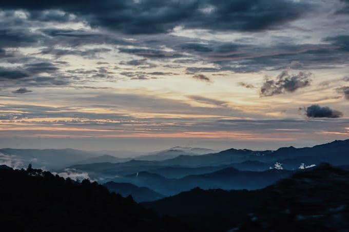

San jose del pacifico es un destino magico en la montaña, conocido por su naturaleza, tranquilidad y experiencias unicas.
1-SENDERISMOS Y CAMINATAS: Hay varios senderos en el bosque nuboso para explorar la flora y fauna local.
2-TEMAZCAL: Participar en una ceremonia de temazcal (baño de vapor tradicional) para relajarte y purificarte.
3-MIRADORES: Visitar miradores para disfrutar visitas espectaculares especialmente al amanecer o atardecer.
4-YOGA Y MEDITACION: Muchos hostales ofrecen clases de yoga, talleres espirituales o espacios para meditar.
5-GASTRONOMIA LOCAL: Probar platillos tipicos oaxaqueños con ingredientes frescos de la region.
6-TIROLESA Y AVENTURA: Algunos lugares ofrecen tirolesas, puentes colgantes y actividades de ecoturismo.
 saber mas